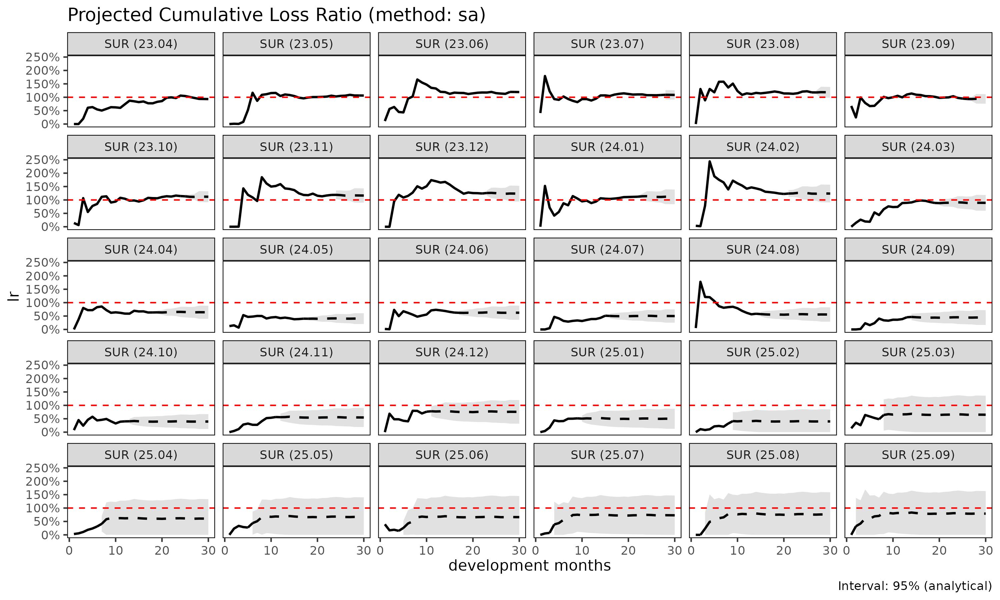

손해율 추정 방법론: SA, ED, CL
Source:vignettes/articles/loss-ratio-methods-ko.Rmd
loss-ratio-methods-ko.Rmdfit_lr() 은 Triangle 객체로부터 코호트별
누적 손해율을 추정한다. 세 가지 방법이 제공되며, 본 vignette 은 각
방법의 trade-off 를 설명한다.
표기
코호트 , dev 에 대하여:
- — 누적 손해액
- — 누적 위험보험료 (익스포저)
- — 연속 발달비(age-to-age, chain ladder) 계수
- — 노출 기반(exposure-driven, ED) intensity
- 성숙점(maturity point) — 그룹 에서 가 안정화되는 dev (CV / RSE 임계값으로 탐지)
방법 1: 단계 적응적(stage-adaptive, SA) ("sa",
기본값)
기본 방법은 가 초반에는 변동성이 크고 후반에는 안정적이라는 사실, 그리고 는 그 반대로 거동한다는 사실을 활용한다. SA 는 성숙점에서 추정량을 전환한다:
거동:
- 성숙 이전: 손해 추정치를 보험료 규모에 anchor 한다. 초기 가 노이즈가 있을 때 고전적 CL 이 겪는 변동적 link 폭발을 회피한다.
- 성숙 이후: 코호트 자체의 관측 수준을 보존한다. pure ED 가 꼬리에서 겪는 “모든 코호트가 평균으로 수렴” 거동을 회피한다.
사용 시점:
- 발달이 여러 해에 걸치는 long-tail 상품.
- 최근 코호트(미성숙 데이터)와 오래된 코호트(성숙)가 혼재하는 경우.
- 성숙 이전·이후의 구조적 차이가 있는 건강보험 코호트 (예: 면책기간 전환).
library(lossratio)
data(experience)
exp <- as_experience(experience)
tri <- build_triangle(exp[cv_nm == "SUR"], group_var = cv_nm)
lr_sa <- fit_lr(tri, method = "sa") # 기본값
plot(lr_sa, type = "lr")
summary(lr_sa)
#> cv_nm cohort latest ultimate reserve exposure_ult lr_latest
#> <char> <Date> <num> <num> <num> <num> <num>
#> 1: SUR 2023-04-01 2442597071 2442597071 0 2621263717 0.93183950
#> 2: SUR 2023-05-01 2423543637 2600462323 176918686 2447179852 1.06560740
#> 3: SUR 2023-06-01 3211045456 3634951622 423906166 3045660786 1.19909110
#> 4: SUR 2023-07-01 2552396717 3106052722 553656005 2859002912 1.08237572
#> 5: SUR 2023-08-01 2472997731 3159902356 686904626 2669412392 1.18159392
#> 6: SUR 2023-09-01 2014222422 2712676355 698453933 2893769142 0.95080886
#> 7: SUR 2023-10-01 2422172261 3464336734 1042164472 3094707500 1.14505030
#> 8: SUR 2023-11-01 2157147627 3350616828 1193469201 2879458987 1.18696133
#> 9: SUR 2023-12-01 2062030049 3510350175 1448320126 2843155663 1.24103980
#> 10: SUR 2024-01-01 1803809923 3316423464 1512613541 2974323113 1.11558444
#> 11: SUR 2024-02-01 1627213163 3293904285 1666691122 2661467247 1.22363542
#> 12: SUR 2024-03-01 1006624217 2212909870 1206285654 2483209935 0.88837591
#> 13: SUR 2024-04-01 707083238 1712964997 1005881758 2676093355 0.63405399
#> 14: SUR 2024-05-01 398857315 1069653530 670796215 2650182997 0.40197016
#> 15: SUR 2024-06-01 558855275 1654603715 1095748440 2653104694 0.62898297
#> 16: SUR 2024-07-01 423131366 1378042291 954910925 2758730497 0.51295337
#> 17: SUR 2024-08-01 457705986 1642689619 1184983633 2949332103 0.58596112
#> 18: SUR 2024-09-01 278007657 1166380335 888372678 2628969704 0.45517868
#> 19: SUR 2024-10-01 214811383 1027414225 812602841 2600171987 0.40289870
#> 20: SUR 2024-11-01 251273978 1400108599 1148834621 2558267991 0.56379158
#> 21: SUR 2024-12-01 322678180 2168358641 1845680461 2865484237 0.76337615
#> 22: SUR 2025-01-01 179253480 1403314580 1224061099 2811568955 0.51475151
#> 23: SUR 2025-02-01 100816663 1246593084 1145776421 3116396355 0.32204865
#> 24: SUR 2025-03-01 111279088 1859420124 1748141036 2859035712 0.48317258
#> 25: SUR 2025-04-01 55914458 1706798413 1650883954 2820900137 0.31249886
#> 26: SUR 2025-05-01 41578392 2113613584 2072035192 3170694512 0.27248382
#> 27: SUR 2025-06-01 14997311 1815490908 1800493597 2746665433 0.14942417
#> 28: SUR 2025-07-01 6232031 2701876527 2695644496 3705335918 0.07318336
#> 29: SUR 2025-08-01 0 2250325480 2250325480 2969197221 0.00000000
#> 30: SUR 2025-09-01 0 2371912952 2371912952 2995415278 0.00000000
#> cv_nm cohort latest ultimate reserve exposure_ult lr_latest
#> <char> <Date> <num> <num> <num> <num> <num>
#> lr_ult maturity_from proc_se param_se se cv
#> <num> <num> <num> <num> <num> <num>
#> 1: 0.9318395 9 0.0 0.0 0.0 0.0000000000
#> 2: 1.0626364 9 270023.8 278555.7 387951.2 0.0001491855
#> 3: 1.1934854 9 461673.6 481436.4 667025.8 0.0001835034
#> 4: 1.0864112 9 217960839.9 130390124.8 253985260.2 0.0817710718
#> 5: 1.1837445 9 235800279.1 139803601.1 274129200.4 0.0867524276
#> 6: 0.9374198 9 230925350.4 124174149.4 262194082.4 0.0966551288
#> 7: 1.1194392 9 276909538.5 163800531.4 321728933.4 0.0928688399
#> 8: 1.1636272 9 347646647.3 180286628.2 391613916.6 0.1168781561
#> 9: 1.2346669 9 379204806.3 195291841.3 426538613.0 0.1215088500
#> 10: 1.1150179 9 371903392.6 185291187.4 415505664.9 0.1252872769
#> 11: 1.2376272 9 406210630.0 191768889.0 449201939.7 0.1363737076
#> 12: 0.8911489 9 348109440.4 131371151.8 372073328.8 0.1681375883
#> 13: 0.6400991 9 316686849.1 103164315.5 333066714.6 0.1944387161
#> 14: 0.4036150 9 262671175.6 65778221.0 270782054.1 0.2531493111
#> 15: 0.6236481 9 342800640.1 103939643.6 358211848.4 0.2164940433
#> 16: 0.4995204 9 336548944.8 89486749.5 348242832.8 0.2527083784
#> 17: 0.5569700 9 387322899.6 109347248.0 402462233.3 0.2450019947
#> 18: 0.4436644 9 360265108.1 81491441.5 369366759.6 0.3166778009
#> 19: 0.3951332 9 358796882.8 74015042.6 366351511.0 0.3565762496
#> 20: 0.5472877 9 451728996.7 105050621.5 463783052.2 0.3312479136
#> 21: 0.7567163 9 619598523.6 171876903.2 642996112.2 0.2965358682
#> 22: 0.4991215 9 523388231.9 114399770.2 535744854.1 0.3817710312
#> 23: 0.4000111 9 701160977.1 151966057.1 717440170.6 0.5755207372
#> 24: 0.6503662 9 1008915815.3 229980334.0 1034795669.0 0.5565152574
#> 25: 0.6050545 9 1022367657.8 226433235.7 1047142606.3 0.6135127608
#> 26: 0.6666090 9 1151829261.7 274237724.0 1184025750.3 0.5601902634
#> 27: 0.6609800 9 1079112730.9 238225268.5 1105095274.0 0.6087032818
#> 28: 0.7291853 9 1349660320.4 349060386.5 1394068195.6 0.5159629545
#> 29: 0.7578902 9 1225790725.6 285878838.8 1258685669.0 0.5593349407
#> 30: 0.7918478 9 1250626835.9 295553919.7 1285075718.4 0.5417887353
#> lr_ult maturity_from proc_se param_se se cv
#> <num> <num> <num> <num> <num> <num>
#> se_lr cv_lr ci_lower ci_upper
#> <num> <num> <num> <num>
#> 1: 0.0000000000 0.0000000000 0.9318395 0.9318395
#> 2: 0.0001585299 0.0001491855 1.0623257 1.0629471
#> 3: 0.0002190086 0.0001835034 1.1930561 1.1939146
#> 4: 0.0888370065 0.0817710718 0.9122938 1.2605285
#> 5: 0.1026927129 0.0867524276 0.9824705 1.3850186
#> 6: 0.0906064270 0.0966551288 0.7598344 1.1150051
#> 7: 0.1039610152 0.0928688399 0.9156793 1.3231990
#> 8: 0.1360026027 0.1168781561 0.8970670 1.4301874
#> 9: 0.1500229546 0.1215088500 0.9406273 1.5287065
#> 10: 0.1396975544 0.1252872769 0.8412157 1.3888201
#> 11: 0.1687798113 0.1363737076 0.9068249 1.5684296
#> 12: 0.1498356315 0.1681375883 0.5974765 1.1848214
#> 13: 0.1244600507 0.1944387161 0.3961619 0.8840363
#> 14: 0.1021748515 0.2531493111 0.2033559 0.6038740
#> 15: 0.1350160999 0.2164940433 0.3590214 0.8882748
#> 16: 0.1262330022 0.2527083784 0.2521083 0.7469326
#> 17: 0.1364587708 0.2450019947 0.2895158 0.8244243
#> 18: 0.1404986749 0.3166778009 0.1682921 0.7190368
#> 19: 0.1408951073 0.3565762496 0.1189838 0.6712825
#> 20: 0.1812879080 0.3312479136 0.1919699 0.9026055
#> 21: 0.2243935262 0.2965358682 0.3169131 1.1965195
#> 22: 0.1905501386 0.3817710312 0.1256501 0.8725929
#> 23: 0.2302146739 0.5755207372 0.0000000 0.8512236
#> 24: 0.3619387000 0.5565152574 0.0000000 1.3597530
#> 25: 0.3712086765 0.6135127608 0.0000000 1.3326102
#> 26: 0.3734278864 0.5601902634 0.0000000 1.3985142
#> 27: 0.4023406930 0.6087032818 0.0000000 1.4495533
#> 28: 0.3762326079 0.5159629545 0.0000000 1.4665877
#> 29: 0.4239144709 0.5593349407 0.0000000 1.5887473
#> 30: 0.4290142098 0.5417887353 0.0000000 1.6327002
#> se_lr cv_lr ci_lower ci_upper
#> <num> <num> <num> <num>방법 2: 노출 기반(exposure-driven, ED) ("ed")
모든 미래 증분에 ED 를 적용한다:
거동:
- 보험료 규모가 전체 발달 구간에 걸쳐 정보를 가질 때 안정적이다.
- 코호트 고유의 수준 신호를 잃는다 — 관측 손해가 더 높은 코호트도 그룹 단위 로 수렴한다.
사용 시점:
- chain ladder 가 이점을 주지 않는 short-tail 상품.
- 모든 link 에서 age-to-age 계수가 신뢰할 수 없는 희소 데이터.
- SA / CL 과 비교하여 sanity check 용도.

방법 3: 고전적 chain ladder ("cl")
고전적 Mack 모형:
거동:
- 표준적인 적립 실무. 손해 투영에 한해서는
fit_cl(tri, value_var = "closs")과 동등하지만,fit_lr()은 추가로crp에 대한 CL 로 익스포저를 전방 추정하고 delta method 로 손해율 불확실성을 계산한다. - 초기 가 노이즈가 있을 때 변동적이다 — 작은 분모가 link 오차를 증폭한다.
사용 시점:
- age-to-age 계수가 전체 발달 구간에서 안정적인 성숙·안정 포트폴리오.
- 규제 당국이 문서화 목적으로 고전적 Mack 형식을 요구하는 적립 작업.

비교
lrs <- list(
sa = fit_lr(tri, method = "sa"),
ed = fit_lr(tri, method = "ed"),
cl = fit_lr(tri, method = "cl")
)
# 코호트 단위 요약
summary(lrs$sa)$ultimate
#> [1] 2442597071 2600462323 3634951622 3106052722 3159902356 2712676355
#> [7] 3464336734 3350616828 3510350175 3316423464 3293904285 2212909870
#> [13] 1712964997 1069653530 1654603715 1378042291 1642689619 1166380335
#> [19] 1027414225 1400108599 2168358641 1403314580 1246593084 1859420124
#> [25] 1706798413 2113613584 1815490908 2701876527 2250325480 2371912952
summary(lrs$ed)$ultimate
#> [1] 2442597071 2577879720 3551186948 3059824776 3058099596 2775733418
#> [7] 3380150645 3219527688 3285011813 3226229795 3046667390 2439253172
#> [13] 2374720730 2163237445 2420419528 2443351723 2698334341 2374632177
#> [19] 2357924863 2427205866 2836437882 2696982612 2949933260 2797749569
#> [25] 2744104326 3109306202 2691511885 3663213936 2946330590 2985339642
summary(lrs$cl)$ultimate
#> [1] 2442597071 2600462323 3634951622 3106052722 3159902356 2712676355
#> [7] 3464336734 3350616828 3510350175 3316423464 3293904285 2212909870
#> [13] 1712964997 1069653530 1654603715 1378042291 1642689619 1166380335
#> [19] 1027414225 1400108599 2168358641 1403314580 954214608 1488227973
#> [25] 958667601 1041506132 484991120 436725873 0 0분산과 신뢰구간
fit_lr() 은 delta method 로 해석적 표준오차를 산출한다.
delta method 변형은 두 가지이다:
-
delta_method = "simple"(기본값) — 익스포저를 고정으로 취급, . -
delta_method = "full"— 익스포저 불확실성과 손해-익스포저 상관계수rho를 반영한다:
부트스트랩 구간도 사용 가능하다:
lr_boot <- fit_lr(tri, method = "sa", bootstrap = TRUE, B = 1000, seed = 1)
summary(lr_boot)
#> cv_nm cohort latest ultimate reserve exposure_ult lr_latest
#> <char> <Date> <num> <num> <num> <num> <num>
#> 1: SUR 2023-04-01 2442597071 2442597071 0 2621263717 0.93183950
#> 2: SUR 2023-05-01 2423543637 2600462323 176918686 2447179852 1.06560740
#> 3: SUR 2023-06-01 3211045456 3634951622 423906166 3045660786 1.19909110
#> 4: SUR 2023-07-01 2552396717 3106052722 553656005 2859002912 1.08237572
#> 5: SUR 2023-08-01 2472997731 3159902356 686904626 2669412392 1.18159392
#> 6: SUR 2023-09-01 2014222422 2712676355 698453933 2893769142 0.95080886
#> 7: SUR 2023-10-01 2422172261 3464336734 1042164472 3094707500 1.14505030
#> 8: SUR 2023-11-01 2157147627 3350616828 1193469201 2879458987 1.18696133
#> 9: SUR 2023-12-01 2062030049 3510350175 1448320126 2843155663 1.24103980
#> 10: SUR 2024-01-01 1803809923 3316423464 1512613541 2974323113 1.11558444
#> 11: SUR 2024-02-01 1627213163 3293904285 1666691122 2661467247 1.22363542
#> 12: SUR 2024-03-01 1006624217 2212909870 1206285654 2483209935 0.88837591
#> 13: SUR 2024-04-01 707083238 1712964997 1005881758 2676093355 0.63405399
#> 14: SUR 2024-05-01 398857315 1069653530 670796215 2650182997 0.40197016
#> 15: SUR 2024-06-01 558855275 1654603715 1095748440 2653104694 0.62898297
#> 16: SUR 2024-07-01 423131366 1378042291 954910925 2758730497 0.51295337
#> 17: SUR 2024-08-01 457705986 1642689619 1184983633 2949332103 0.58596112
#> 18: SUR 2024-09-01 278007657 1166380335 888372678 2628969704 0.45517868
#> 19: SUR 2024-10-01 214811383 1027414225 812602841 2600171987 0.40289870
#> 20: SUR 2024-11-01 251273978 1400108599 1148834621 2558267991 0.56379158
#> 21: SUR 2024-12-01 322678180 2168358641 1845680461 2865484237 0.76337615
#> 22: SUR 2025-01-01 179253480 1403314580 1224061099 2811568955 0.51475151
#> 23: SUR 2025-02-01 100816663 1246593084 1145776421 3116396355 0.32204865
#> 24: SUR 2025-03-01 111279088 1859420124 1748141036 2859035712 0.48317258
#> 25: SUR 2025-04-01 55914458 1706798413 1650883954 2820900137 0.31249886
#> 26: SUR 2025-05-01 41578392 2113613584 2072035192 3170694512 0.27248382
#> 27: SUR 2025-06-01 14997311 1815490908 1800493597 2746665433 0.14942417
#> 28: SUR 2025-07-01 6232031 2701876527 2695644496 3705335918 0.07318336
#> 29: SUR 2025-08-01 0 2250325480 2250325480 2969197221 0.00000000
#> 30: SUR 2025-09-01 0 2371912952 2371912952 2995415278 0.00000000
#> cv_nm cohort latest ultimate reserve exposure_ult lr_latest
#> <char> <Date> <num> <num> <num> <num> <num>
#> lr_ult maturity_from proc_se param_se se cv
#> <num> <num> <num> <num> <num> <num>
#> 1: 0.9318395 9 0.0 0.0 0.0 0.0000000000
#> 2: 1.0626364 9 270023.8 278555.7 387951.2 0.0001491855
#> 3: 1.1934854 9 461673.6 481436.4 667025.8 0.0001835034
#> 4: 1.0864112 9 217960839.9 130390124.8 253985260.2 0.0817710718
#> 5: 1.1837445 9 235800279.1 139803601.1 274129200.4 0.0867524276
#> 6: 0.9374198 9 230925350.4 124174149.4 262194082.4 0.0966551288
#> 7: 1.1194392 9 276909538.5 163800531.4 321728933.4 0.0928688399
#> 8: 1.1636272 9 347646647.3 180286628.2 391613916.6 0.1168781561
#> 9: 1.2346669 9 379204806.3 195291841.3 426538613.0 0.1215088500
#> 10: 1.1150179 9 371903392.6 185291187.4 415505664.9 0.1252872769
#> 11: 1.2376272 9 406210630.0 191768889.0 449201939.7 0.1363737076
#> 12: 0.8911489 9 348109440.4 131371151.8 372073328.8 0.1681375883
#> 13: 0.6400991 9 316686849.1 103164315.5 333066714.6 0.1944387161
#> 14: 0.4036150 9 262671175.6 65778221.0 270782054.1 0.2531493111
#> 15: 0.6236481 9 342800640.1 103939643.6 358211848.4 0.2164940433
#> 16: 0.4995204 9 336548944.8 89486749.5 348242832.8 0.2527083784
#> 17: 0.5569700 9 387322899.6 109347248.0 402462233.3 0.2450019947
#> 18: 0.4436644 9 360265108.1 81491441.5 369366759.6 0.3166778009
#> 19: 0.3951332 9 358796882.8 74015042.6 366351511.0 0.3565762496
#> 20: 0.5472877 9 451728996.7 105050621.5 463783052.2 0.3312479136
#> 21: 0.7567163 9 619598523.6 171876903.2 642996112.2 0.2965358682
#> 22: 0.4991215 9 523388231.9 114399770.2 535744854.1 0.3817710312
#> 23: 0.4000111 9 701160977.1 151966057.1 717440170.6 0.5755207372
#> 24: 0.6503662 9 1008915815.3 229980334.0 1034795669.0 0.5565152574
#> 25: 0.6050545 9 1022367657.8 226433235.7 1047142606.3 0.6135127608
#> 26: 0.6666090 9 1151829261.7 274237724.0 1184025750.3 0.5601902634
#> 27: 0.6609800 9 1079112730.9 238225268.5 1105095274.0 0.6087032818
#> 28: 0.7291853 9 1349660320.4 349060386.5 1394068195.6 0.5159629545
#> 29: 0.7578902 9 1225790725.6 285878838.8 1258685669.0 0.5593349407
#> 30: 0.7918478 9 1250626835.9 295553919.7 1285075718.4 0.5417887353
#> lr_ult maturity_from proc_se param_se se cv
#> <num> <num> <num> <num> <num> <num>
#> se_lr cv_lr ci_lower ci_upper
#> <num> <num> <num> <num>
#> 1: 0.0000000000 0.0000000000 0.93183950 0.9318395
#> 2: 0.0001585299 0.0001491855 1.06231741 1.0629663
#> 3: 0.0002190086 0.0001835034 1.19309074 1.1938960
#> 4: 0.0888370065 0.0817710718 0.89969393 1.2541737
#> 5: 0.1026927129 0.0867524276 0.97818456 1.3879857
#> 6: 0.0906064270 0.0966551288 0.76626286 1.1267473
#> 7: 0.1039610152 0.0928688399 0.91331875 1.3156194
#> 8: 0.1360026027 0.1168781561 0.90714734 1.4490470
#> 9: 0.1500229546 0.1215088500 0.98027937 1.5409843
#> 10: 0.1396975544 0.1252872769 0.84691340 1.4123250
#> 11: 0.1687798113 0.1363737076 0.92601862 1.5489913
#> 12: 0.1498356315 0.1681375883 0.61752969 1.2146931
#> 13: 0.1244600507 0.1944387161 0.41821930 0.8831611
#> 14: 0.1021748515 0.2531493111 0.21972719 0.6248022
#> 15: 0.1350160999 0.2164940433 0.37829007 0.8920031
#> 16: 0.1262330022 0.2527083784 0.28234007 0.7789597
#> 17: 0.1364587708 0.2450019947 0.29847465 0.8534440
#> 18: 0.1404986749 0.3166778009 0.19779539 0.7336470
#> 19: 0.1408951073 0.3565762496 0.13578428 0.6987881
#> 20: 0.1812879080 0.3312479136 0.24172874 0.9484988
#> 21: 0.2243935262 0.2965358682 0.38776385 1.2553205
#> 22: 0.1905501386 0.3817710312 0.17446278 0.8839768
#> 23: 0.2302146739 0.5755207372 0.03859162 0.9079461
#> 24: 0.3619387000 0.5565152574 0.03530498 1.4511574
#> 25: 0.3712086765 0.6135127608 0.00000000 1.4196067
#> 26: 0.3734278864 0.5601902634 0.02557285 1.5128472
#> 27: 0.4023406930 0.6087032818 0.00000000 1.5760689
#> 28: 0.3762326079 0.5159629545 0.11075062 1.5787469
#> 29: 0.4239144709 0.5593349407 0.00000000 1.6643254
#> 30: 0.4290142098 0.5417887353 0.05281717 1.7271721
#> se_lr cv_lr ci_lower ci_upper
#> <num> <num> <num> <num>방법 선택
빠른 의사결정 흐름:
포트폴리오가 완전히 성숙했는가 (모든 코호트가 성숙점 이후)?
├── Yes → "cl" (고전적, 규제 친화적)
└── No
├── 초기 age-to-age 계수가 변동적인가?
│ ├── Yes → "sa" (기본 — 노출 기반 평활)
│ └── No → "cl"
└── 익스포저(rp) 가 더 정보적인 신호인가?
├── Yes → "ed"
└── No → "sa"실무: "sa" 로 시작하라 (기본값). 이후
민감도 점검을 위해 "cl" 과 "ed" 를 함께
실행한다. 셋이 모두 일치하면 추정은 견고하다. 결과가 갈라지면 성숙점
탐지와 기저 ata 계수를 점검한다.